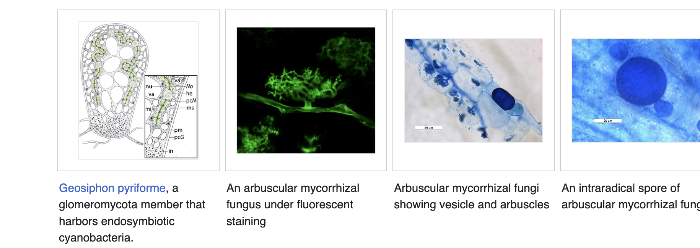
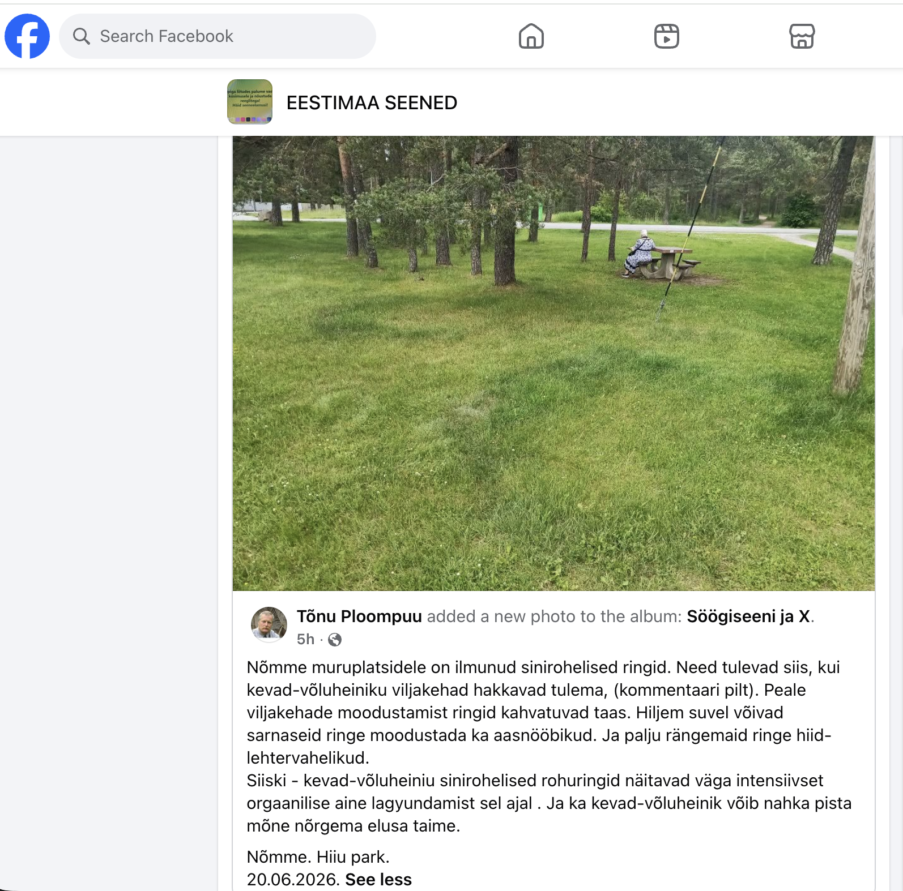

Seeneriigi Nähtamatud Niidid
Müstika, pärimus ja maa-alune võrgustik
Lektor: Boris Meldre
20. august 2026
Kuidas olla rohkem nagu seen?
Mõttepaus enne rännakut seeneriiki:
""""Kas me suudame kuulata sama sügavalt, kui mütseel kasvab? Kuulatada nii sügavalt, et kuuleme tuuli, vesi ja kive sosistamas oma iidseid saladusi?" – Jasper"""
- Infomürast vabanemine: Meie kõrvad on täis uudiseid, podcaste ja helisid. Mütseel õpetab vaikust.
- Ökosüsteemi toetamine: Kuidas olla liitlane teistele organismidele, et me kõik õitseksime koos?
Mis on seen tegelikult?
Meie igapäevane ettekujutus seenest on sageli puudulik ja piirdub vaid pealispinnaga:
- Mütseel: Seene tegelik keha – hiiglaslik maa-alune niidistik.
- Viljakeha: See, mida me kutsume "seeneks", on vaid seene õis ehk viljakandja.
- Seened ei ole taimed ega loomad, nad on täiesti omaette riik – eluloovad lammutajad.
Samblikud ja mulla sünd
Seente ja vetikate ürgne liit, mis muutis elutu planeedi roheliseks oaasiks:
"Enne samblikke oli maismaa vaid paljas elutu kalju. Nemad olid esimesed pioneerid, kes lahustasid kivi happega ja lõid esimese mulla." – Peter McCoy loeng
- Maismaa koloniseerimine: Umbes 450–500 miljonit aastat tagasi astusid samblikud (seente ja vetikate/tsüanobakterite sümbioos) esimesena veest kuivale maale.
- Kivi lahustamine happega: Samblikud eraldavad spetsiifilisi happeid (nt oksaalhapet), mis lagundavad keemiliselt ka kõige kõvemat graniiti, vabastades mineraalaineid.
- Mulla sünd (pedogenees): Lagunenud kivitolmu ja samblike endi orgaanilise aine segunemisel sündis esimene muld. Ilma seente happelise kivipuurimiseta poleks maismaataimed saanud kunagi juurduda.
Krohmseened: Ürgne sümbioos ja mükoriisa
Mulla loojad, taimede ürgsed partnerid ja evolutsiooni elav ajalugu:
- Klassifikatsioon (4 seltsi): Jaguneb neljaks peamiseks seltsiks: Glomerales, Diversisporales, Archaeosporales ja Paraglomerales. Nad ei moodusta viljakehi, vaid elavad mulla ja juurte sees.
- Geosiphon pyriformis: Ainulaadne endosümbioos tsüanobakteriga Nostoc punctiforme, mis näitab seente rolli evolutsiooni varases faasis teiste fotosünteesivate organismide majutamisel oma raku sees.
- Arbuskulaarne mükoriisa: Seened tungivad läbi juureraku kesta, luues arbuskleid (toitainete vahetus) ja vesiikuleid. Üle 90% taimedest sõltub nendest fosfori ja vee hankimisel.
- Mulla superliim: Krohmseened toodavad glomaliini – valku, mis seob mulda ja on üks planeedi suurimaid maapinna süsinikusalvesid.

Krohmseened: Geosiphon pyriforme endosümbioos, AM seened ja eosed (Allikas: Wikipedia)
"Wood Wide Web" – Metsa Internet
Koostöö ja kommunikatsioon puude vahel:
- Mütseel ühendab terve metsa ühtseks närvisüsteemiks.
- Info- ja toitainevahetus: Puud jagavad seene kaudu ressursse (tugevam toetab nõrgemat).
Põimunud Elu ja Seente Intelligentsus
Põhipunktid Merlin Sheldrake'i raamatust "Entangled Life":
"""Mütseelivõrgustik on seene hiljutise ajaloo kaart ja see tuletab meile meelde, et kõik eluvormid on tegelikult protsessid, mitte asjad." – Merlin Sheldrake""
- Aju vaba intelligentsus: Seened langetavad keerulisi otsuseid, lahendavad probleeme ja navigeerivad ruumis ilma tsentraalse ajuta.
- Radikaalne sümbioos: Samblikud ja mükoriisa esitavad väljakutse traditsioonilisele indiviidi kontseptsioonile – kus lõpeb üks ja algab teine?
- Ainevahetuse meistrid: Seened suudavad lagundada kive, plastikut ja naftat (mükoremediatsioon) ning luua uusi materjale.
- Kujundav jõud: Fungi ehk seeneriik loob maailmu – nad kujundavad meie muldasid, atmosfääri, meie meeli ja ühist tulevikku.
Tšornobõli kiiritusseened ja radiosüntees
Elu ja energia ioniseeriva kiirguse käes:
"Loodus ei salli tõepoolest tühja kohta – tagasihoidlik sametine must seen teeb ioniseeriva kiirgusega midagi nutikat." – teadus.postimees.ee
- Cladosporium sphaerospermum: Tšornobõli reaktori seintelt leitud must seen, mis areneb kiirguse käes jõudsalt.
- Radiosüntees: Teooria, mille kohaselt seene tume pigment melaniin kasutab ioniseerivat kiirgust energia tootmiseks (sarnaselt klorofüllile fotosünteesis).
- Kosmiline kiirguskaitse: Rahvusvahelise kosmosejaama (ISS) katsetes vähendas seen sellest läbitungivat kiirgust, näidates potentsiaali tulevastel kosmosemissioonidel.
Nõiaringid ja rahvapärimus
Haldjate ja nõidade üleloomulikud tantsuplatsid läbi sajandite:
"Kuna seenerõngad ilmusid maapinnale peaaegu üleöö ja täiusliku ringina, uskusid inimesed enne teaduse arengut, et tegu on üleloomulike jõudude kätetööga."
- Tantsuplatsid ja rituaalid: Briti saartel usuti, et ringid on haldjate tantsukohad. Saksamaal (Hexenringe) tantsisid seal nõiad Valpurgi ööl. Eestis ja Skandinaavias seostati neid maa-aluste mütoloogiliste madudega.
- Aja kadumine ja ohud: Inimesi hoiatati rangelt rõngasse astumise eest. Rõngasse astunud inimene võis sattuda haldjate lummusesse – tantsides nendega enda arvates vaid mõne minuti, oli pärismaailmas möödunud seitse aastat.
- Peidetud aarded ja ennustused: Uskumuste kohaselt tähistab ring maetud kulda, mille leidmiseks oli vaja üleloomulike olendite luba. Seente kiiret ringikujulist kasvu peeti ka märgiks saabuvast vihmasajust.
Nõiaringid Eestis: Vaatlus Hiiu pargis
Reaalne näide sellest, kuidas mütseel kujundab maastikku (Tõnu Ploompuu vaatlus 20.06.2026):
- Asukoht: Nõmme, Hiiu park (Eestimaa Seened grupp).
- Kevad-võluheinik: Rohurõngas ilmub, kui seene viljakehad hakkavad maa alt välja tulema.
- Intensiivne orgaanilise aine lagundamine ja lämmastiku vabanemine tekitab lopsaka sinirohelise ringi.
- Peale viljakehade moodustumist ja eoste levitamist ringid kahvatuvad uuesti.
- Hilisemal perioodil võivad sarnaseid ringe tekitada aasnööbikud ja laiemaid ringe hiid-lehtervahelikud.

Seened vihmasaju tekitajana
Kuidas seeneeosed ja valgud toimivad atmosfääris pilveseemnetena:
"Seenel on võime luua endale eluks vajalikku niiskust, vallandades atmosfääri miljardeid eoseid, mille ümber kondenseerub vihmavesi." – Peter McCoy loeng
- Pilvede kondensatsioonituumad (CCN): Seeneeosed sisaldavad hügroskoopseid molekule, mis tõmbavad ligi veeauru, toimides mikroskoopiliste šabloonidena vihmapiiskade tekkeks.
- Ballistospooride heitemehhanism: Seened paiskavad eoseid õhku kiire veepiisa katapuldi (Bulleri piisk) abil. Soojad õhuvoolud viivad need kõrgele atmosfääri, kus moodustuvad pilved.
- Jääkristalliseerumise valgud: Osa seeni (nt Mortierellaceae) eritab valke, mis külmutavad vett kõrgematel temperatuuridel. Need valgud pilvedes sunnivad vett koonduma, raskenema ja sademetena alla langema.
- Looduslik tagasisideahel: Vihm niisutab mütseeli, stimuleerides seente kasvu. Uued seened paiskavad õhku veelgi rohkem eoseid, tekitades uut vihma ja hoides metsa eluringi töös.
Inimene vs. Seen: Tants või võitlus?
Kultuuriline paradoks meie suhetes elava loodusega:
- Armas pärimus: Inimene on andnud sellele maa-alusele nähtusele muinasjutulise ja ilusa nime – haldjaringid (fairy rings).
- Teaduse vaade: Seened on unikaalsed ökosüsteemi insenerid, mis muudavad orgaanilised ained ja lämmastiku bioaktiivseks, et toita metsa ja taimi.
- Monokultuuri ihalus: Sellele vaatamata näevad paljud muruomanikud nõiaringides "haigust" või "defekti".
- Google'i esimene soovitus inimeste otsinguis: "What chemical kills fairy rings?" (Milline kemikaal tapab haldjaringe?).
- Soov hoida loodust steriilse ja allutatuna viib meid konflikti elulooja endaga.

Radikaalne mükoloogia ja ökoloogiline taaste
Partnerlus seeneriigiga maa parandamiseks ja tervendamiseks (Peter McCoy loengu põhjal):
"Mükoloogia ei ole lihtsalt teadus laboris – see on radikaalne vahend pinnase taastamiseks, toidujulgeolekuks ja looduse tervendamiseks." – sustainabledesignmasterclass.com
- Mükoremediatsioon: Seente võime lagundada ja neutraliseerida keskkonnamürke (nafta, plast, pestitsiidid ja raskemetallid), tehes neist elupäästvad ökoloogilised filtrid.
- Mükopermakultuur ja muld: Seened on mulla elujõu alus. Mütseeli lisamine parandab mulla struktuuri, hoiab niiskust ja teeb toitained taimedele kättesaadavaks.
- Mükofabrikatsioon: Uus ajastu materjalitööstuses – mütseelist kasvatatud biolagunevad pakkematerjalid, ehitusplokid ja nahalaadsed tooted, mis asendavad plasti ja sünteetikat.
Puuseente Vägi ja Pärimus
Sild looduse ja esivanemate tarkuse vahel:
- Must pässik (Chaga): Meie metsade must kuld. Immuunsuse ja elujõu keedised.
- Tuletael: Praktiline ellujäämisvahend – iidne tule süütamise kunst.
- Kuidas puuseente vaim toetab meid saunarituaalides ja igapäevases tervises.
Meditsiinilised Vaabikud: Reishi vs. Jänesvaabik
Ganoderma perekonna kaks vägevat raviseent – pärimus vs. teaduslik reaalsus:
- Ganoderma perekond: Nii Aasia kultusesse kuuluv Reishi (*Ganoderma lucidum*) kui ka Eestis laialt levinud Jänesvaabik (*Ganoderma applanatum*) kuuluvad samasse vaabikute suguvõsasse.
- Artist's Conk (Kunstniku klamber): Jänesvaabiku ingliskeelne nimi tuleneb selle valgest pooripinnast, millele kriipsutatud joonistused muutuvad püsivalt tumepruuniks.
- Teaduslikult võrdne ravitoime: Farmakoloogilised uuringud näitavad, et jänesvaabikul on Reishiga sarnane tugev põletikuvastane, immuunsüsteemi toetav ja viirusevastane toime.
- Tugevam antioksüdant: Mitmete uuringute kohaselt on jänesvaabikul tänu kõrgele fenoolide ja flavonoidide sisaldusele isegi kõrgem antioksüdantne aktiivsus kui Reishil.
- Metsa kohalik apteek: Kalli imporditud Reishi asemel leiame teaduslikult samaväärse immuunsuse tugevdaja täiesti tasuta otse oma koduümbruse lehtpuudelt!
Seened meditsiinis: Rakuehitus ja patogeensus
Kuidas seente unikaalne bioloogia mõjutab meditsiini ja ravi (Physeo USMLE põhjal):
"Seenerakud erinevad taimedest ja loomadest unikaalse membraani ja kesta poolest, mis on ühtlasi peamised ravimite sihtmärgid." – physeo.com
- Ergosterool ja kitiin: Seente rakumembraan sisaldab ergosterooli (inimestel kolesterool) ja kest kitiini. Enamik seenevastaseid ravimeid (asoolid, amfoteritsiin B) ründab just ergosterooli või selle sünteesi.
- Diformsed seened: Osa patogeenseid seeni suudab muuta oma kuju – külmas keskkonnas (20 °C) kasvavad nad hallitusseenena (mold), kuid inimese kehatemperatuuril (37 °C) pärmseenena (yeast).
- Kliiniline tähendus: Diformsus ("mold in the cold, yeast in the heat") aitab patogeenidel (nt Histoplasma, Blastomyces) kopsudesse ja kudedesse levida ning immuunsüsteemi eest hoiduda.
Müstika ja Teadvus
Seened kultuuriloos, šamanismis ja vaimses tasakaalus:
- Kärbseseene pärimus ja sild teise maailma.
- Adaptogeensed seened – kuidas seeneriik aitab inimkehal stressiga kohaneda ja tasakaalu leida.
- Korilus kui meditatsioon: Siseilma vaigistamine, et kuulda elava maailma polüfoonilisi laule.
Lugemissoovitused
Raamatud, mis avavad uksi seente ja fermentatsiooni saladustesse:
- "Entangled Life" (Merlin Sheldrake): Uurib seente võrgustike intelligentsust, elu kui suhete ja interaktsioonide põimunud protsessi ning nende rolli tulevikutehnoloogiates.
- "The Art of Fermentation" (Sandor Ellix Katz): Fermentatsiooni piibel, mis õpetab meid koos elama, töötama ja käärima koos kasulike mikroorganismidega.
- "The Noma Guide to Fermentation" (René Redzepi & David Zilber): Maailma tipprestorani praktiline teejuht (koji, kombuchad, shoyud, misod jne), mis selgitab fermentatsiooni ensümaatilist maagiat köögis.
Aitäh kuulamast!
Arutelu ja küsimused